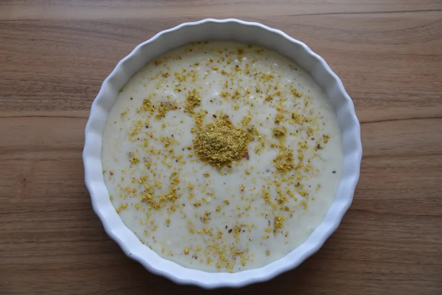

Ferni

FIRNI (AFGHAN CUSTARD)
Firni - a light, easy-to-make custard with flavours of cardamom, pistachios and almonds.
Ingredients
6 cups whole milk
5 tbs cornstarch
1½ cups sugar
½ tsp freshly ground cardamom
1 tsp rosewater (optional)
A handful of chopped almonds and pistachio
Directions
- Pour 1 cup of milk into a small bowl, add the cornstarch and whisk them well until smooth.
- Pour the rest of the milk into a non-stick saucepan, adding the sugar and cardamom (and rosewater,
ifdesired)
whilst cooking over medium heat.
- Before it starts to boil, slowly add the milk and cornstarch mixture to the pan, whisking constantly to
avoid lumps. Keep stirring until the mixture increases in thickness.
- Take the pan off the heat and pour into a large shallow serving bowl. Let it cool at room temperature,
andthenput in the refrigerator for about 1 – 2 hours.
- Finally, sprinkle your Firni with sliced almonds and pistachios and serve!